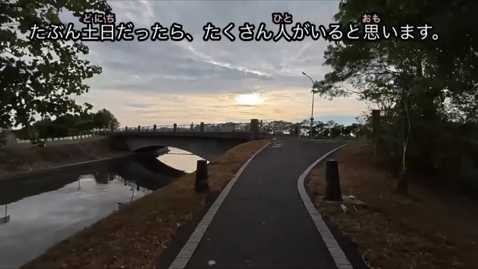
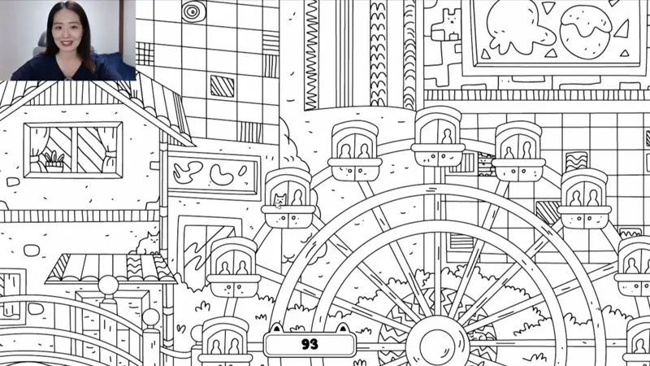

がいる
| Polite | います |
|---|---|
| Casual | いる |
Same meaning: "there is" (people, animals). Only the politeness changes.

YouTube · video
ハリネズミがいますよ
"There's a hedgehog."
がいる says someone is there: "there is", or "I have" for people. The person or animal goes first, then が, then いる. Things use ある instead.
On this card, the speaker spots a hedgehog in the grass. ハリネズミ ("hedgehog") + が + います, and よ points it out to us.
"There isn't" is いません / いない.

YouTube · PiroPito First Playthrough of Minecraft #03
あれ待って、朝なのに蜘蛛がいる。
"Huh, wait, there's a spider, even though it's morning."
いる is for things that are alive and move by themselves, like people and animals. ある is for everything else, even trees and flowers. On this card, a spider walks around on its own, so it's いる.
Examples
You call a shop and ask if the manager is in.
今、店長がいますか？
"Is the manager there right now?"
Add か and it's a question: "is someone there?".
PoliteA coworker asks about your family.
姉がいます。
"I have an older sister."
"I have" a person is also いる: brothers, kids, friends.
PoliteYou look into the garden and point.
あ、猫がいる。
"Oh, there's a cat."
Animals are いる too, even tiny ones like spiders.
CasualYou arrive at the beach early in the morning.
誰もいない。
"Nobody's here."
The "not" of いる is いない. 誰もいない: "nobody is there".
CasualWith and without
猫です。
"It's a cat." You're naming what it is.
猫がいます。
"There's a cat." You're saying it's there.
友達があります。
Sounds like a friend is an object you own.
友達がいます。
"I have a friend." People take いる.
Sentence mining

YouTube · video
たぶん土日だったら、たくさん人がいると思います。
"On weekends there are probably lots of people."
People are living things, so いる, not ある. Plain いる here because と思います follows.

Source unknown No source
あ、観覧車に乗ってる猫がいます。
"Oh, there's a cat riding the Ferris wheel."
A cat is alive, so いる, not ある. 観覧車に乗ってる describes the cat.

Legal High · Episode 8
メイさんには友達がいません。
"Mei doesn't have any friends."
いません is the negative of います. For people, "doesn't have" is also いる.

New Atashin'chi · Episode 1
うちには最終兵器がいるからなあ。
"Well, we've got our ultimate weapon at home."
The "weapon" is alive, so it's いる, not ある.
YouTube · video
そしてその隣に女性がいるんですけど、すごい見てくる。
"And there's a woman next to me, and she keeps staring."
Where (その隣に), then who (女性), then がいる.

Weakest Beast · Episode 3
俺には兄がいるんだけど
"I have an older brother, but..."
兄 ("older brother") + がいる = "I have an older brother". Family members use いる.

Shirokuma Cafe · Episode 46
笹子さんがいるよ。
"There's Sasako."
A person, so it takes いる.

Shirokuma Cafe · Episode 24
パンダくん、いい人がいるよ。
"Panda, there's someone good for you."
Same いる, here introducing someone.
Reference
A Dictionary of Basic Japanese Grammar
Entry "iru¹" (exist) · pp. 153–155